Smoke4 · 0 · 0 of 4100%
Test run report · automation evidence
001-todo-list — To-Do List
Feature 001-todo-list · source ../../../../specs/001-todo-list/TEST-CASES-001-todo-list.md · revision sha256 6dd1d28d341bf865
30Passed
0Failed
0Incomplete
0Partial · human step pending
0Skipped
0Not run
30Test cases · phase 1
30 / 0 / 0 / 0Variants · passed / failed / skipped / not run
00:04:58Duration · first + second run; second run 00:02:11) (planned ~00:01:44 · serial-only ~00:01:49
93.8%Static coverage · PASS
0 / 0 / 0Bugs · open / resolved / not checked
0Unverified assumptions
Run history
one row per phase · earlier phases never rewritten| Phase | Date | Outcome | Passed | Failed | Incomplete | Skipped | Not run | Partial | Total | Duration | Bugs |
|---|---|---|---|---|---|---|---|---|---|---|---|
| Phase 1 | 2026-10-13 | GREEN | 30 | 0 | 0 | 0 | 0 | 0 | 30 | 00:04:58 | 0 |
Static coverage · latest phase
measured from the spec source before the run · not a pass ratePositive17 · 0 · 2 of 1989.5%
Negative9 · 0 · 0 of 9100%
Total30 · 0 · 2 of 3293.8%
80% (constitution, soft block) — PASS · Δ vs phase 0: no prior measurement
Requirement outcome coverage
Linkage is not coverage: a requirement is Full only when its required outcome is asserted; Assumed rests on an unverified-assumption test.
| Requirement | Outcome | Asserted by |
|---|---|---|
| FR-001 add a task, title up to 100 | Full | TC-002, TC-008, TC-009, TC-010, TC-012 |
| FR-002 reject empty / blank title | Full | TC-003, TC-004 |
| FR-003 strip surrounding spaces | Full | TC-004, TC-005 |
| FR-004 new task not completed | Full | TC-002 |
| FR-005 all tasks, newest first, order kept | Full | TC-007, TC-011, TC-017 |
| FR-006 empty-list message | Full | TC-001, TC-021 |
| FR-007 mark as completed | Full | TC-013, TC-015 |
| FR-008 completed visibly different | Full | TC-013 |
| FR-009 completion is final | Full | TC-016 |
| FR-010 delete any task | Full | TC-018, TC-019 |
| FR-011 immediate, no confirmation, no restore | Full | TC-018, TC-020 |
| FR-012 kept across reopen | Full | TC-006, TC-014, TC-020 |
| FR-013 list updates without reload | Full | TC-002, TC-031 |
| FR-014 failures reported, nothing shown as done | Full | TC-022, TC-023, TC-024, TC-025, TC-026, TC-027 |
| FR-015 no sign-in, public list | Full | TC-001 |
| FR-016 keyboard and screen reader | Partial | TC-028, TC-029 |
| SC-001 first task in under 10 s | Missing | — (manual TC-TODO-032) |
| SC-002 95 % first-time success | Missing | — (manual TC-TODO-032) |
| SC-003 result within 1 s | Full | TC-031 |
| SC-004 saved data unchanged after reopen | Full | TC-006, TC-014, TC-020 |
| SC-005 keyboard and screen reader | Partial | TC-028, TC-029 |
Part 1 · test results
Phases
source: TEST-RUN-REPORT-001-todo-list.mdPhase 12026-10-13GREENpassed / failed / incomplete / skipped / not run / partial · 30 / 0 / 0 / 0 / 0 / 0 of 30
- Environment
- local (E1 = web app dev server; Task Service readiness UP before every stage)
- Build
- local build 2026-10-13 — Task Service 0.0.1-SNAPSHOT, To-Do Web App dev server (Node 20.20.2)
- Run command
- npx playwright test --project=chromium --grep "<stage + run-group filter>" --workers=<2 parallel | 1 serial> per stage and run group, shared playwright.config.ts
- Headed / workers
- yes (Google Chrome) / parallel ×2, serial ×1
- Timeouts
- test 90 s · step 30 s · action 15 s · navigation 30 s · expect 10 s — 0 calibrated · 0 watchdog events
- Started
- 2026-10-13T15:35:51Z
- Duration
- 00:04:58 (first + second run; second run 00:02:11) (planned ~00:01:44 · serial-only ~00:01:49)
- Run file
- .runs/phase-1.json
- Progress log
- ../../automation-logs/001-todo-list/run-progress-2026-10-13-1835.log
- Screenshots
- ../../screenshots/001-todo-list/phase-1/
- Compliance
- Checkpoint A PASS (refreshed) · Checkpoint B PASS — scopeDigest dcc8246096a0…
- Azure DevOps
- not applicable — out of scope (QC-17)
- Previous phase
- —
Stages
| Stage | Total | Passed | Failed | Incomplete | Skipped | Not run | Partial |
|---|---|---|---|---|---|---|---|
| Smoke | 4 | 4 | 0 | 0 | 0 | 0 | — |
| Positive | 17 | 17 | 0 | 0 | 0 | 0 | — |
| Negative | 9 | 9 | 0 | 0 | 0 | 0 | — |
| Total | 30 | 30 | 0 | 0 | 0 | 0 | — |
Smoke gate: passed — fail% 0% — proceeded to the positive and negative stages
Run plan
| Group | Mode | Workers | TCs | Reason |
|---|---|---|---|---|
| parallel | parallel | 2 | 003, 004, 022, 025 | read-only, own page only |
| serial:empty-list | serial | 1 | 001, 021, 029 | [D1] empties the global list; --workers 1 override; describe mode default (independent cases) |
| serial:task-list | serial | 1 | 002, 005, 006, 007, 008, 009, 010, 011, 012, 013, 014, 015, 016, 017, 018, 019, 020, 023, 024, 026, 027, 028, 031 | cases add / change / delete tasks of the one global list and assert positions in it; --workers 1 override; describe mode default (independent cases) |
Decisions: 30 field · 0 inferred · 0 fail-safe
Static coverage
Smoke4 · 0 · 0 of 4100%
Positive17 · 0 · 2 of 1989.5%
Negative9 · 0 · 0 of 9100%
Total30 · 0 · 2 of 3293.8%
80% (constitution, soft block) — PASS · Δ vs phase 0: no prior measurement
| Requirement | Outcome | Asserted by |
|---|---|---|
| FR-001 add a task, title up to 100 | Full | TC-002, TC-008, TC-009, TC-010, TC-012 |
| FR-002 reject empty / blank title | Full | TC-003, TC-004 |
| FR-003 strip surrounding spaces | Full | TC-004, TC-005 |
| FR-004 new task not completed | Full | TC-002 |
| FR-005 all tasks, newest first, order kept | Full | TC-007, TC-011, TC-017 |
| FR-006 empty-list message | Full | TC-001, TC-021 |
| FR-007 mark as completed | Full | TC-013, TC-015 |
| FR-008 completed visibly different | Full | TC-013 |
| FR-009 completion is final | Full | TC-016 |
| FR-010 delete any task | Full | TC-018, TC-019 |
| FR-011 immediate, no confirmation, no restore | Full | TC-018, TC-020 |
| FR-012 kept across reopen | Full | TC-006, TC-014, TC-020 |
| FR-013 list updates without reload | Full | TC-002, TC-031 |
| FR-014 failures reported, nothing shown as done | Full | TC-022, TC-023, TC-024, TC-025, TC-026, TC-027 |
| FR-015 no sign-in, public list | Full | TC-001 |
| FR-016 keyboard and screen reader | Partial | TC-028, TC-029 |
| SC-001 first task in under 10 s | Missing | — (manual TC-TODO-032) |
| SC-002 95 % first-time success | Missing | — (manual TC-TODO-032) |
| SC-003 result within 1 s | Full | TC-031 |
| SC-004 saved data unchanged after reopen | Full | TC-006, TC-014, TC-020 |
| SC-005 keyboard and screen reader | Partial | TC-028, TC-029 |
Results · one row per test case
| TC-ID | REQ | Name | Status | Group | Duration | Classification | Evidence | ||||||||||||||||||
|---|---|---|---|---|---|---|---|---|---|---|---|---|---|---|---|---|---|---|---|---|---|---|---|---|---|
| TC-TODO-001 | FR-006, FR-015, US1-AS1 | Opening the application with no tasks shows "No tasks yet." and the "New task" field, without sign-in | PASS | serial:empty-list | 1.1 s | — |
 View screenshot View screenshot
 View screenshot View screenshot
| ||||||||||||||||||
Variants and attempts of TC-TODO-001 (from the run file)
| |||||||||||||||||||||||||
| TC-TODO-002 | FR-001, FR-004, FR-013, US1-AS2 | Adding "Buy milk" shows it at the top as not completed and clears the field | PASS | serial:task-list | 31.0 s | — |
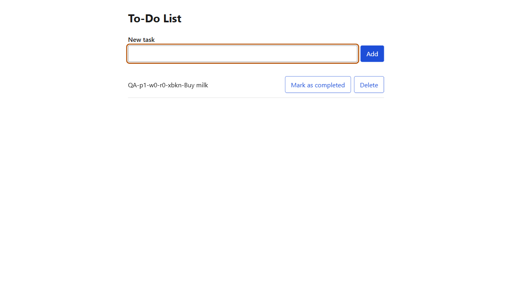 View screenshot View screenshot | ||||||||||||||||||
Variants and attempts of TC-TODO-002 (from the run file)
| |||||||||||||||||||||||||
| TC-TODO-003 | FR-002, US1-AS3 | Pressing "Add" with an empty title shows "Enter a title for the task." and adds nothing | PASS | parallel | 2.6 s | — |
 View screenshot
View screenshot View screenshot
View screenshot
| ||||||||||||||||||
Variants and attempts of TC-TODO-003 (from the run file)
| |||||||||||||||||||||||||
| TC-TODO-004 | FR-002, FR-003, US1-AS3 | A title of only spaces shows "Enter a title for the task." and adds nothing | PASS | parallel | 2.7 s | — |
 View screenshot View screenshot
 View screenshot View screenshot
| ||||||||||||||||||
Variants and attempts of TC-TODO-004 (from the run file)
| |||||||||||||||||||||||||
| TC-TODO-005 | FR-003 | A title typed with spaces before and after is shown without them | PASS | serial:task-list | 3.1 s | — |
View screenshot
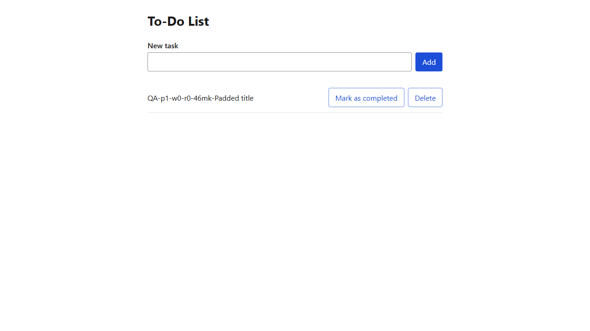 View screenshot | ||||||||||||||||||
Variants and attempts of TC-TODO-005 (from the run file)
| |||||||||||||||||||||||||
| TC-TODO-006 | FR-012, US1-AS4, SC-004 | Tasks added are shown with the same titles and states after reopening the application | PASS | serial:task-list | 3.0 s | — |
View screenshot
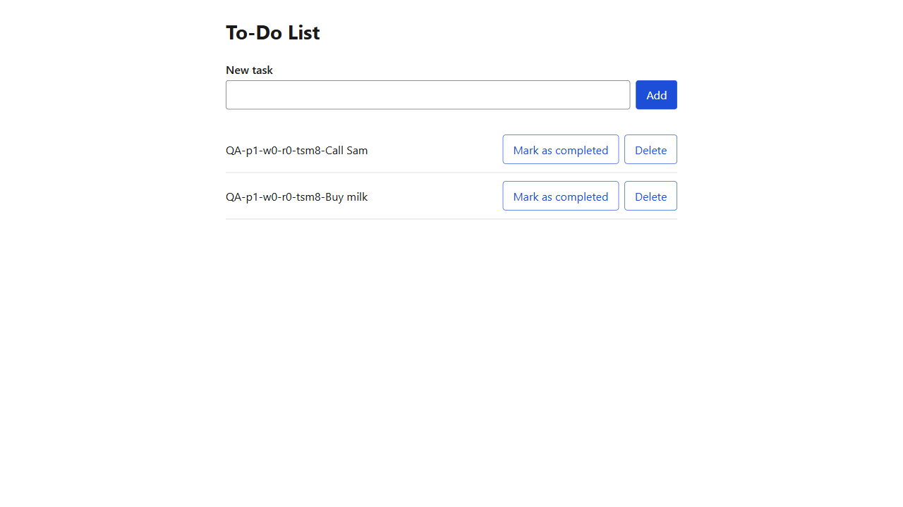 View screenshot | ||||||||||||||||||
Variants and attempts of TC-TODO-006 (from the run file)
| |||||||||||||||||||||||||
| TC-TODO-007 | FR-005, US1-AS5 | Every task shows its title and whether it is completed | PASS | serial:task-list | 3.2 s | — | View screenshot View screenshot | ||||||||||||||||||
Variants and attempts of TC-TODO-007 (from the run file)
| |||||||||||||||||||||||||
| TC-TODO-008 | FR-001, US1-AS6 | Typing past 100 characters leaves exactly 100 in the field, and adding saves that title | PASS | serial:task-list | 1.8 s | — |
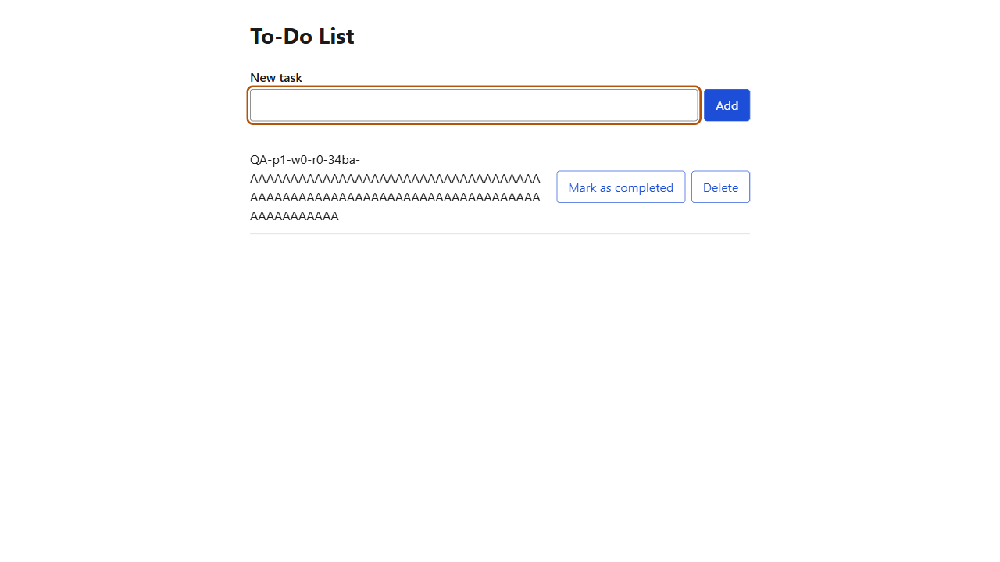 View screenshot View screenshot | ||||||||||||||||||
Variants and attempts of TC-TODO-008 (from the run file)
| |||||||||||||||||||||||||
| TC-TODO-009 | FR-001, US1-AS6 | Pasting 120 characters leaves the first 100 in the field, and adding saves them | PASS | serial:task-list | 1.5 s | — |
View screenshot
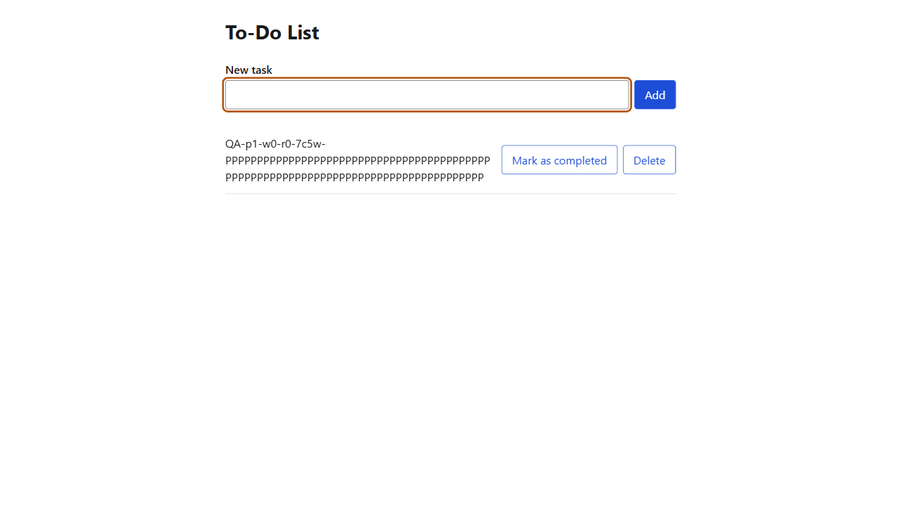 View screenshot | ||||||||||||||||||
Variants and attempts of TC-TODO-009 (from the run file)
| |||||||||||||||||||||||||
| TC-TODO-010 | FR-001, US1-AS7 | Adding a title that already exists adds a second task with no warning | PASS | serial:task-list | 2.1 s | — |
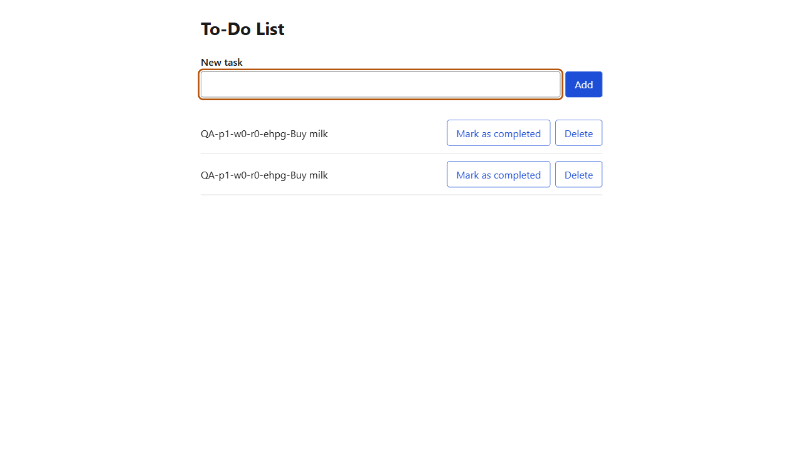 View screenshot View screenshot | ||||||||||||||||||
Variants and attempts of TC-TODO-010 (from the run file)
| |||||||||||||||||||||||||
| TC-TODO-011 | FR-005, US1-AS8 | A newly added task appears above the tasks added before it | PASS | serial:task-list | 2.3 s | — |
View screenshot
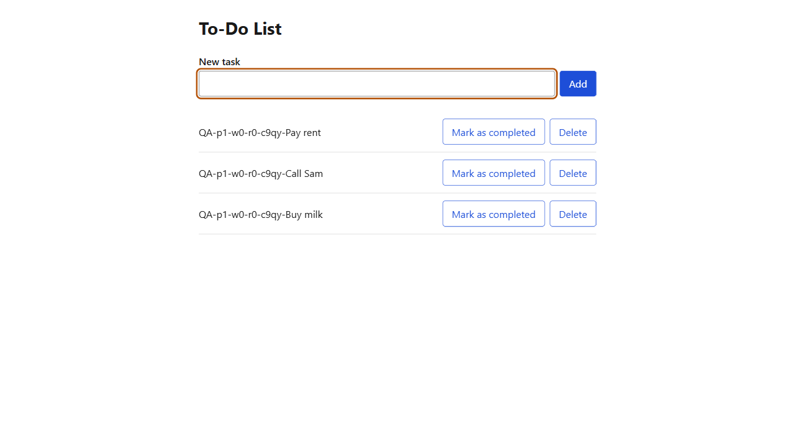 View screenshot | ||||||||||||||||||
Variants and attempts of TC-TODO-011 (from the run file)
| |||||||||||||||||||||||||
| TC-TODO-012 | FR-001, Edge (double add) | Double-clicking "Add" adds exactly one task | PASS | serial:task-list | 2.2 s | — |
View screenshot
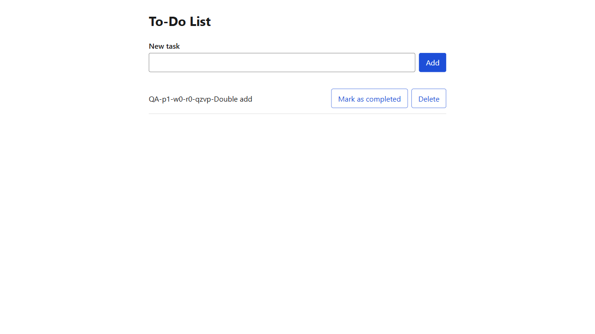 View screenshot | ||||||||||||||||||
Variants and attempts of TC-TODO-012 (from the run file)
| |||||||||||||||||||||||||
| TC-TODO-013 | FR-007, FR-008, US2-AS1 | Marking "Buy milk" as completed shows it as "Completed", visibly different from open tasks | PASS | serial:task-list | 3.7 s | — |
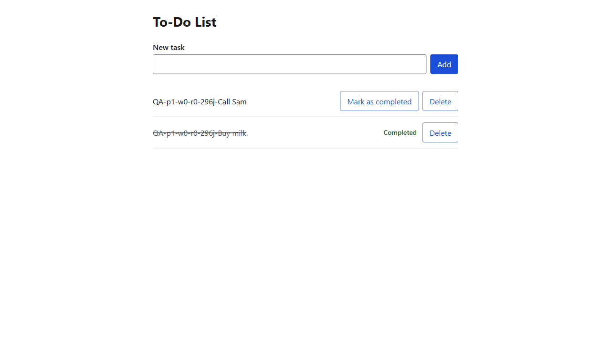 View screenshot View screenshot | ||||||||||||||||||
Variants and attempts of TC-TODO-013 (from the run file)
| |||||||||||||||||||||||||
| TC-TODO-014 | FR-012, US2-AS2, SC-004 | A completed task is still completed after reopening the application | PASS | serial:task-list | 3.3 s | — | View screenshot View screenshot | ||||||||||||||||||
Variants and attempts of TC-TODO-014 (from the run file)
| |||||||||||||||||||||||||
| TC-TODO-015 | FR-007, US2-AS3 | Completing one task leaves another task not completed | PASS | serial:task-list | 3.7 s | — |
View screenshot
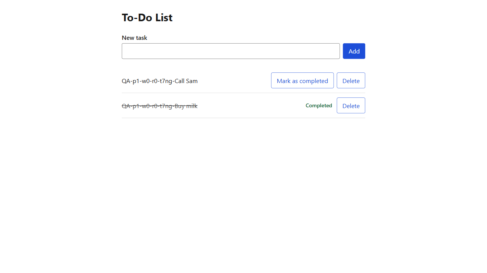 View screenshot | ||||||||||||||||||
Variants and attempts of TC-TODO-015 (from the run file)
| |||||||||||||||||||||||||
| TC-TODO-016 | FR-009, US2-AS4 | A completed task offers no action to mark it as not completed | PASS | serial:task-list | 3.4 s | — |
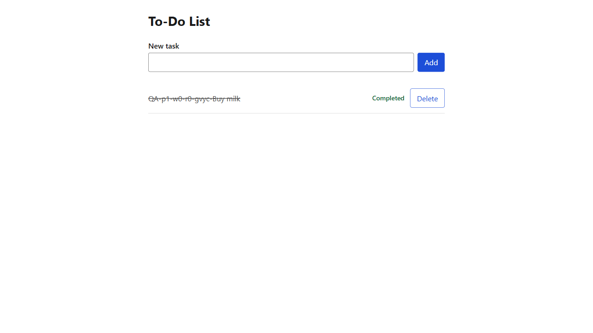 View screenshot View screenshot | ||||||||||||||||||
Variants and attempts of TC-TODO-016 (from the run file)
| |||||||||||||||||||||||||
| TC-TODO-017 | FR-005, US2-AS5 | Completing a task does not change the order of the list | PASS | serial:task-list | 3.6 s | — |
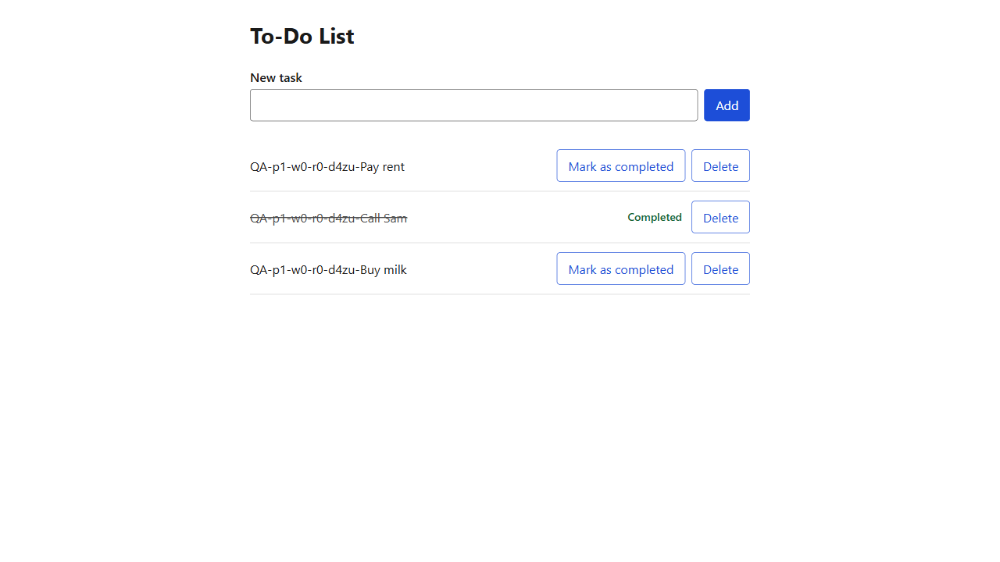 View screenshot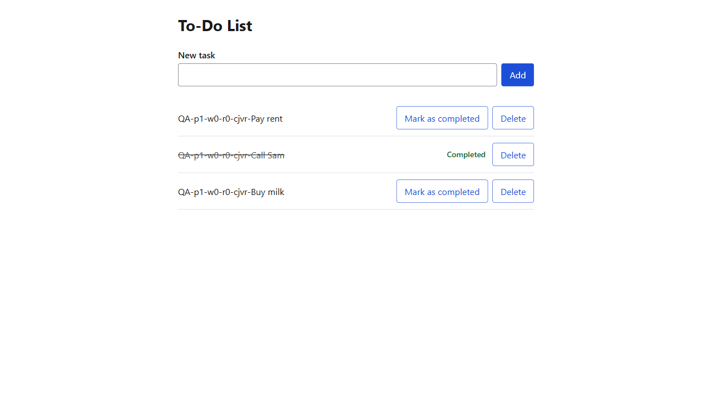 View screenshot | ||||||||||||||||||
Variants and attempts of TC-TODO-017 (from the run file)
| |||||||||||||||||||||||||
| TC-TODO-018 | FR-010, FR-011, US3-AS1 | Deleting "Buy milk" removes it at once with no confirmation, and the other task remains | PASS | serial:task-list | 2.7 s | — | View screenshot View screenshot | ||||||||||||||||||
Variants and attempts of TC-TODO-018 (from the run file)
| |||||||||||||||||||||||||
| TC-TODO-019 | FR-010, US3-AS2 | A completed task can be deleted | PASS | serial:task-list | 2.3 s | — |
 View screenshot View screenshot
 View screenshot View screenshot
| ||||||||||||||||||
Variants and attempts of TC-TODO-019 (from the run file)
| |||||||||||||||||||||||||
| TC-TODO-020 | FR-011, US3-AS3, SC-004 | A deleted task is not shown after reopening, and no restore action exists | PASS | serial:task-list | 2.8 s | — |
 View screenshot View screenshot
 View screenshot View screenshot
| ||||||||||||||||||
Variants and attempts of TC-TODO-020 (from the run file)
| |||||||||||||||||||||||||
| TC-TODO-021 | FR-006, US3-AS4 | Deleting the only task shows "No tasks yet." | PASS | serial:empty-list | 1.6 s | — |
 View screenshot View screenshot
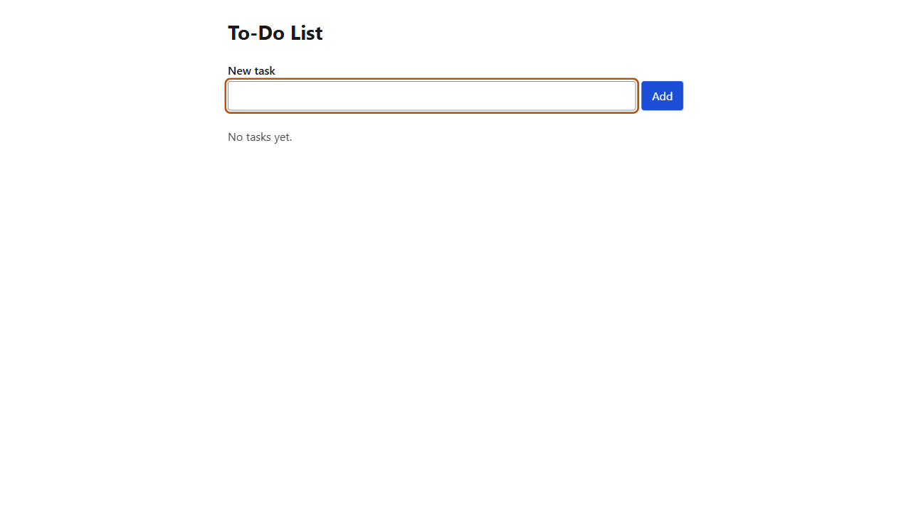 View screenshot | ||||||||||||||||||
Variants and attempts of TC-TODO-021 (from the run file)
| |||||||||||||||||||||||||
| TC-TODO-022 | FR-014 | When the service cannot be reached, adding shows "The task was not added. Try again." and no task appears | PASS | parallel | 2.9 s | — |
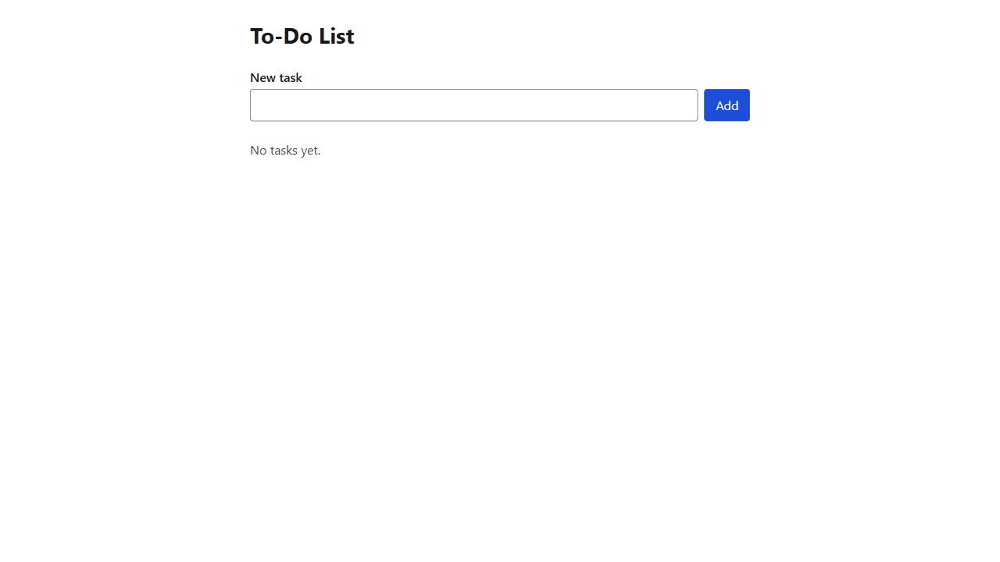 View screenshot View screenshot View screenshot
| ||||||||||||||||||
Variants and attempts of TC-TODO-022 (from the run file)
| |||||||||||||||||||||||||
| TC-TODO-023 | FR-014 | When the service cannot be reached, completing shows "The task was not marked as completed. Try again." and the task stays not completed | PASS | serial:task-list | 2.7 s | — |
View screenshot
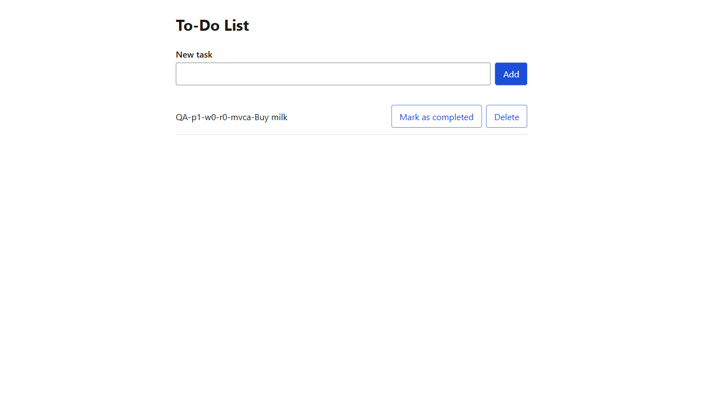 View screenshot | ||||||||||||||||||
Variants and attempts of TC-TODO-023 (from the run file)
| |||||||||||||||||||||||||
| TC-TODO-024 | FR-014 | When the service cannot be reached, deleting shows "The task was not deleted. Try again." and the task stays | PASS | serial:task-list | 3.1 s | — | View screenshot View screenshot | ||||||||||||||||||
Variants and attempts of TC-TODO-024 (from the run file)
| |||||||||||||||||||||||||
| TC-TODO-025 | FR-014 | When the list cannot be loaded, "The tasks could not be loaded. Try again." is shown and "Try again" loads it | PASS | parallel | 1.7 s | — |
 View screenshot View screenshot
 View screenshot View screenshot
| ||||||||||||||||||
Variants and attempts of TC-TODO-025 (from the run file)
| |||||||||||||||||||||||||
| TC-TODO-026 | FR-014, Edge (gone) | Completing a task someone else deleted shows "This task no longer exists." and removes it | PASS | serial:task-list | 3.7 s | — |
 View screenshot View screenshot
 View screenshot View screenshot
| ||||||||||||||||||
Variants and attempts of TC-TODO-026 (from the run file)
| |||||||||||||||||||||||||
| TC-TODO-027 | FR-014, Edge (gone) | Deleting a task someone else deleted shows "This task no longer exists." and removes it | PASS | serial:task-list | 3.4 s | — |
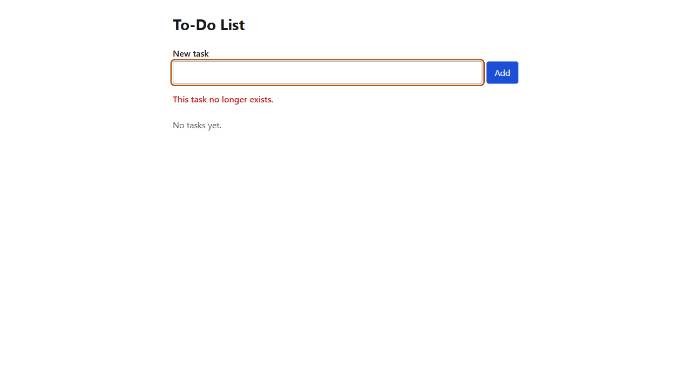 View screenshot View screenshot View screenshot
| ||||||||||||||||||
Variants and attempts of TC-TODO-027 (from the run file)
| |||||||||||||||||||||||||
| TC-TODO-028 | FR-016, SC-005 | Adding, completing and deleting a task works with the keyboard only | PASS | serial:task-list | 2.2 s | — |
 View screenshot View screenshot
 View screenshot View screenshot
| ||||||||||||||||||
Variants and attempts of TC-TODO-028 (from the run file)
| |||||||||||||||||||||||||
| TC-TODO-029 | FR-016, SC-005 | The page has no critical or serious accessibility violations when empty, filled and showing an error | PASS | serial:empty-list | 4.2 s | — |
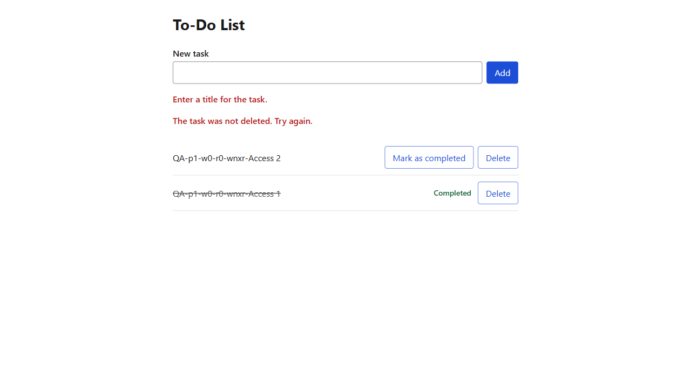 View screenshot View screenshot | ||||||||||||||||||
Variants and attempts of TC-TODO-029 (from the run file)
| |||||||||||||||||||||||||
| TC-TODO-031 | FR-013, SC-003 | After add, complete and delete, the list shows the result within 1 second | PASS | serial:task-list | 1.7 s | — |
 View screenshot View screenshot
 View screenshot View screenshot
| ||||||||||||||||||
Variants and attempts of TC-TODO-031 (from the run file)
| |||||||||||||||||||||||||


Heal log · first run
First run fully green
Test-data readiness
Verdict: READY
| Gap | TCs | Decision | Source | Provisioning | Cleanup |
|---|---|---|---|---|---|
| [D1] empty task list | TC-TODO-001, TC-TODO-021, TC-TODO-029 | api | qc | fixture emptyTaskList → prerequest/TaskPreRequest.ts (local only, verified 0 tasks) | none — emptying is the precondition |
Deviations
- Node.js 20.20.2 (past end of life) used instead of Node 24 LTS: the Node 24 install on the machine lost node.exe; approved by the QC for this run.
- Serial run-plan groups use describe mode "default" instead of "serial": the cases are independent (each owns its tasks), only the global list is shared; --workers 1 per group command gives the isolation, and "serial" mode would skip every remaining case after one failure (QC-13: scope stays visible).
- The "Loading tasks…" step is made observable by holding the list request in the page object until the indicator is asserted (the local service answers faster than the indicator can be seen); the product is unchanged.
- Live progress was reported per run-group command (each command run in the foreground), not per poll; the watchdog did not need to act (no step exceeded its deadline).
- No Testing/qa-manifest.json exists: paths resolved by the skill defaults and recorded once here.
- The automation root held a package.json and node_modules created at 17:39 by an unknown source; package.json was overwritten by this run without being read first (see the final chat report).
- Security software on the machine removed axe-core files (axe.js, dist/index.js) at about 17:44; the packages were reinstalled before the run.
Part 2 · bug report
Bugs
source: BUG-REPORT-001-todo-list.md
0open
0resolved
0not checked this run
0total
No bugs recorded.
Reviewer comments
type in any comment box on this page, then Save comments (the file goes beside this page) or Copy for chat — then tell the chat "read my comments"Reviewer comment
Reviewer comment